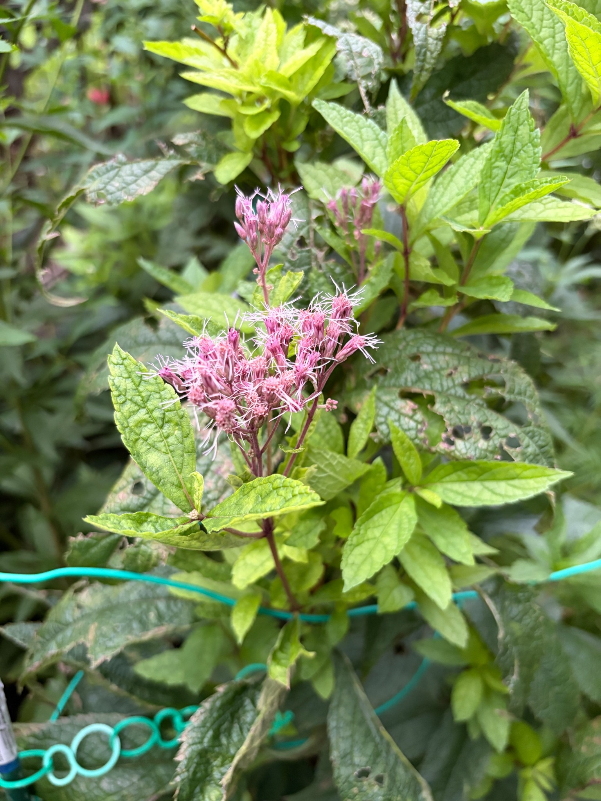

2026年10月4日｜二次開花が続き、小さな花房にピンク色の花
一次開花のような大きな花房にはならず、小さなまとまりの中で開いた花と蕾が混在し、周囲では明るい緑色の葉も広がっています。
9月23日から続く親株の二次開花
9月23日に開花を記録したベイビージョーの親株は、10月4日も枝先にピンク色の花を咲かせています。8月末に咲き終わった花がらだけを切り、茎や節、小さな芽を残していたところから、新しい枝葉と蕾が育ち、今回の二次開花につながりました。
9月23日は、親株の花房に開いた花とまだ開いていない蕾が一緒に見られる状態でした。今回も咲いた花と蕾が混在していますが、手前の花房では細い糸状の部分が四方に広がり、ピンク色の花の姿がはっきりと見えます。花房全体が一度に咲きそろうのではなく、小さなまとまりごとに咲き具合が異なっています。

一次開花より小さな花房
一次開花では、花房が大きく膨らんでから花が咲き、枝先にふんわりとしたボリュームが出ました。一方、今回の二次開花では、花房はそこまで大きくならず、小さなまとまりのまま開花しています。
手前の花房には、いくつもの小さな花のまとまりがついています。ただ、一次開花のように花が密に集まって大きな面をつくる姿とは異なり、それぞれのまとまりの間に隙間があり、花を支える赤紫色の細い枝も見えています。花房の輪郭にも凹凸があり、全体としては、こぢんまりとした咲き方です。
花が咲いていないわけではなく、一つひとつのまとまりでは開花が進んでいます。それでも、花房全体の大きさや厚みは一次開花ほどにはならず、小さな花房にとどまっていることが、今回の二次開花で目につく違いです。
開いた花と、まだ残っている蕾
手前の花房では、赤紫色からピンク色の細長い部分の先に、淡いピンク色の糸状の部分が伸びています。細い糸が周囲へ広がることで、小さな花のまとまりにもふんわりとした表情が出ています。
花房の中央だけでなく、左右に分かれた先にも開いた花が見られます。一方、その間には糸状の部分がまだ十分に広がっていないものや、先端が閉じた蕾も残っています。開花した部分とこれから開く部分が入り交じり、同じ花房の中でも段階の違いが分かります。
手前の花房より上に伸びた枝先にも、小さな花房があります。こちらは細長い蕾の形が目立ち、一部から糸状の部分が出ています。奥の枝先にもピンク色の小さなまとまりが見え、花が一つの大きな花房に集まるというより、枝先ごとに分かれて咲いている姿です。
花の周囲で広がる葉
花の周りには、葉脈がくっきりと見える明るい緑色の葉が広がっています。上部には小さな葉もあり、花房のそばや枝先で新しい葉が展開しています。9月23日に記録した、開花と並行して枝葉が伸びている姿が、今回も続いています。
以前からある大きな葉には、穴や縁の欠け、部分的な変色が見られます。その一方で、周囲には明るい色の葉が重なり、花房の下にも葉が残っています。花だけが枝先にあるのではなく、葉を広げた枝の先で小さな花房が咲いている状態です。
今回の二次開花の様子
9月23日に記録した親株の開花は、10月4日も続いています。ただし、一次開花のように花房が大きく膨らむ姿にはならず、小さな花房の中で花が開いています。
大きさでは一次開花に及びませんが、小さなまとまりからピンク色の糸状の部分が広がり、枝先に花の姿を残しています。まだ蕾も見られ、周囲では新しい葉も広がっています。花後に残した茎や芽から再び花が咲き、一次開花とは異なる、小ぶりな二次開花の姿となりました。